Архитектура, несущие конструкции и инженерные системы. Готовим рабочую документацию по объекту.
Строим жилые, коммерческие и промышленные объекты от котлована до чистовой отделки, комплектации помещений и благоустройства. Берём весь комплекс или отдельные этапы по вашему проекту.
Виды работ
Архитектура, несущие конструкции и инженерные системы. Готовим рабочую документацию по объекту.
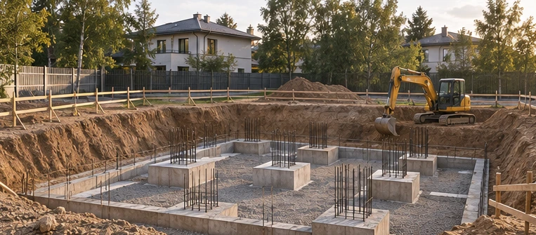
Расчищаем площадку, разрабатываем котлованы и траншеи, готовим основание под строительство.
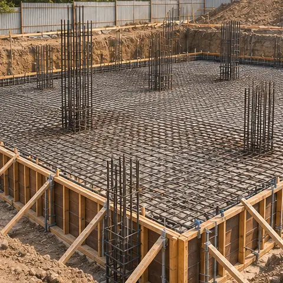
Устраиваем фундамент по проекту и защищаем подземную часть здания от влаги.
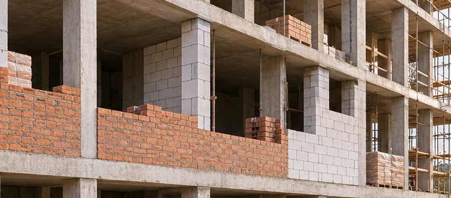
Возводим несущие конструкции, наружные и внутренние стены, перекрытия и перегородки.
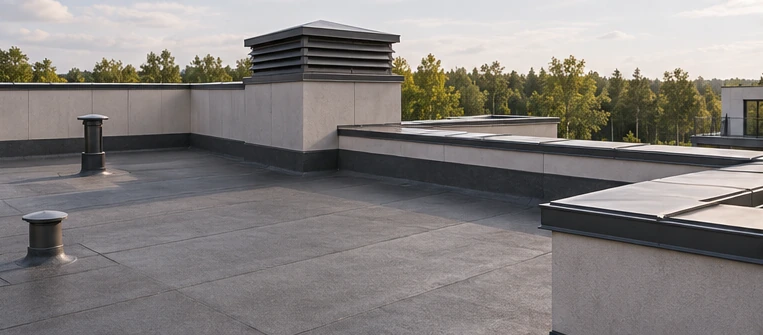
Устраиваем плоские и скатные кровли, утепление, примыкания и отвод воды.
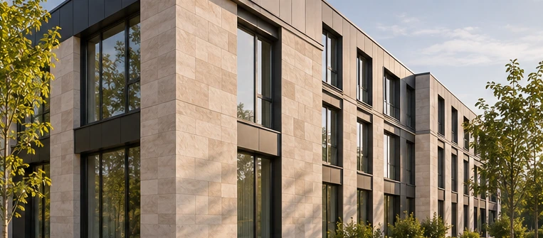
Утепляем и облицовываем фасады, монтируем остекление и входные группы.
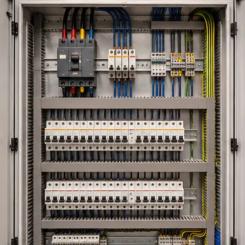
Прокладываем кабельные трассы, собираем щиты, подключаем освещение и слаботочные сети.
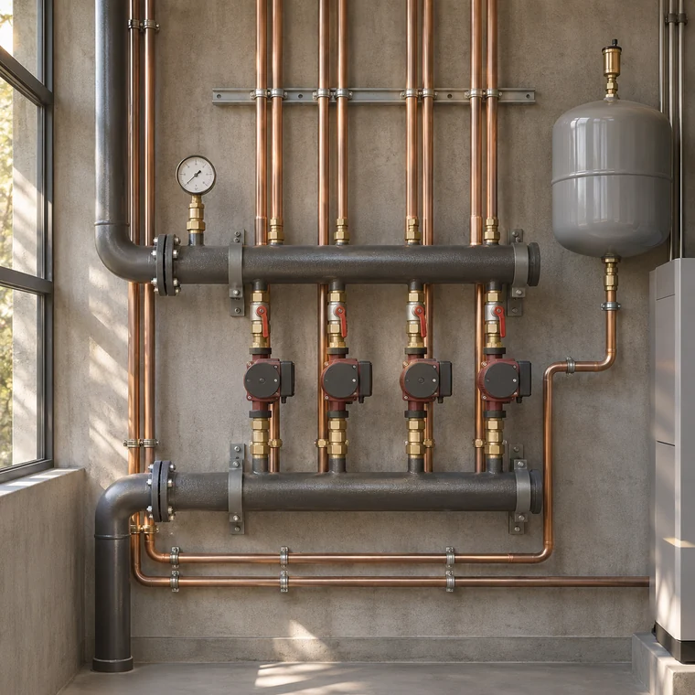
Монтируем трубопроводы, отопительные приборы и оборудование по согласованной схеме.

Устраиваем приточные и вытяжные системы, прокладываем воздуховоды и линии кондиционирования.

Монтируем сети холодной и горячей воды, внутреннюю канализацию и точки подключения сантехники.
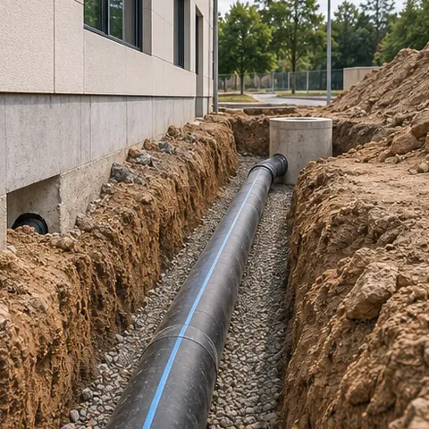
Прокладываем наружные трубопроводы и кабельные линии в пределах согласованных проектом границ.

Подготавливаем стены, полы и потолки под согласованные финишные материалы.
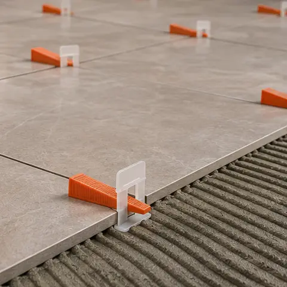
Выполняем финишную отделку стен, полов, потолков и откосов по проекту интерьера.
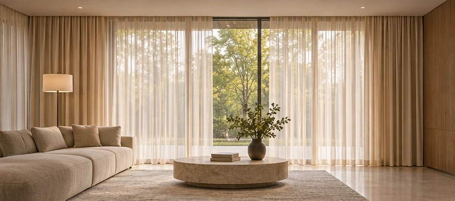
Устанавливаем двери, светильники и сантехнику. По смете монтируем встроенную мебель, карнизы и шторы.
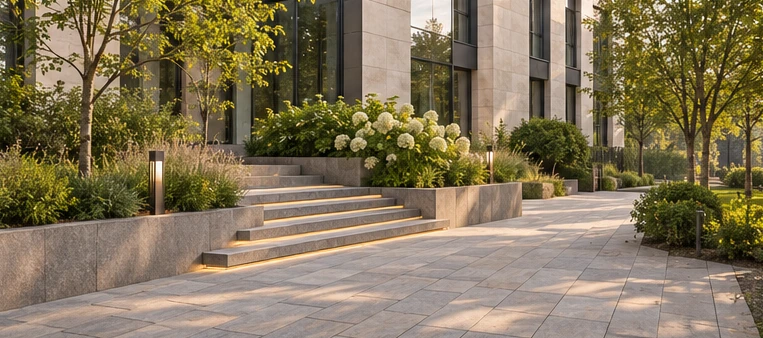
Устраиваем проезды и дорожки, наружное освещение и озеленение по проекту благоустройства.
Укажите назначение и местоположение объекта, площадь или объём работ и желаемые сроки. Приложите чертежи, техническое задание или дизайн-проект, если они есть. Состав работ, материалы и комплектацию согласуем по проекту и смете.